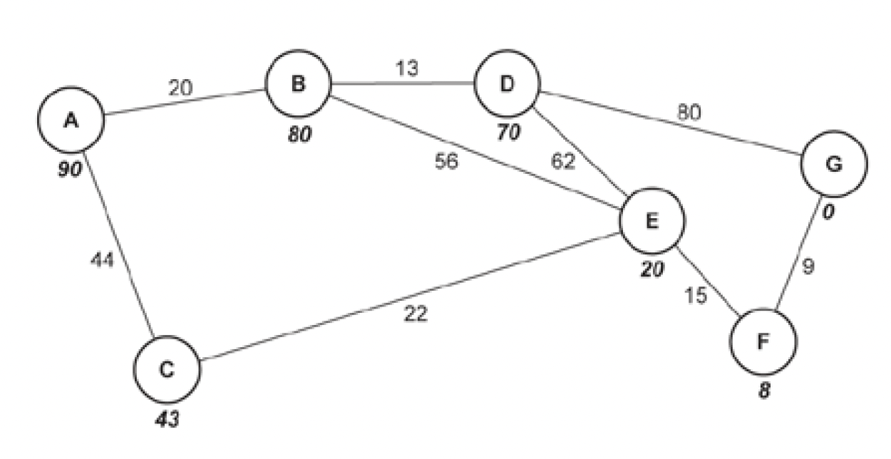

Check Your Understanding – Questions
1(a)(i). Question
A group of students are designing a racing car game. The game will allow players to enter their name and then a choice of vehicle. They will then race against other vehicles that will be controlled by the program. Players will use the arrow keys to control their vehicle.
The students use abstraction during the design process.
i. State what is meant by abstraction and describe how it can be used to design the racing car game. [3]
Definition
Use
Answer:
Definition:
- Removal of unnecessary detail.
Use (examples in this scenario):
- Simplifying scenery so only essential objects are shown.
- Removing internal features of vehicles that are not needed.
- Simplifying the physics used for vehicle movement.
- Vehicles may not be drawn to scale.
1(a)(ii). Question
ii. Explain why it is beneficial to use abstraction when designing a computer program such as a game. [3]
Answer (any two explained):
- Simplifies the problem, algorithm, and programming code.
- Faster to create the program.
- The final program uses less memory and processor time.
- The programmer can focus on the core aspects of the game.
- The completed game is simpler for end users to understand and play.
1(b)(i). Question
The group of students use decomposition.
i. State what is meant by decomposition. [1]
Answer:
- Splitting a problem down into smaller sub-problems.
1(b)(ii). Question
ii. Describe one benefit of using decomposition when designing a computer program such as a game. [2]
Answer (one benefit explained):
- Breaks the problem into smaller, more manageable parts, making the program easier to design and test.
- Allows tasks to be split between programmers so development is faster.
- Makes it easier to identify reusable code and subroutines.
Stage 2 — Question 2
2. A company runs a Virtual Learning Environment (VLE). Schools can register students to use the VLE. The students get their own account and the school can view and monitor their students who are registered. There are currently over 10 000 schools registered, each with up to 1000 students. The students can watch videos, take quizzes and communicate using forums and online chat tools. The company gathers a large amount of data and wants to use data mining to help them decide how to improve the VLE in the future. Discuss how the company can use data mining to decide how to improve the VLE. You should include the following in your answer: • the characteristics of data mining • the benefits of data mining in this scenario • the drawbacks of data mining in this scenario. [12]Answer (12 marks)
Characteristics of data mining
- Data mining involves analysing very large datasets to find patterns, trends, relationships, or anomalies that are not obvious by simply reading the data.
- It turns large quantities of raw activity data into useful information that can support predictions and decisions (e.g., service improvements, targeting, increasing revenue).
- It may use techniques such as pattern matching and anomaly detection to highlight unusual or important behaviour.
Benefits in this VLE scenario
- The company can identify when the system is used most/least (days/times), helping plan maintenance windows and server scaling.
- They can identify which features are used most/least (videos, quizzes, forums, chat), so they can prioritise development and improve the most valuable tools.
- They can find quiz questions/topics that students consistently get wrong, revealing difficult content and where to improve explanations, videos, or question design.
- They can compare behaviour across schools/regions to spot which approaches correlate with higher engagement or better outcomes, then replicate successful features.
- They can use findings to improve retention/engagement (e.g., improving popular tools, redesigning confusing areas), which can support business goals.
Drawbacks in this scenario
- Data mining can reveal patterns but may not explain why they occur; the company may still need surveys/experiments to confirm causes.
- There are privacy and ethical concerns because student activity is being logged; they must ensure collection is lawful and clearly covered by terms/consent.
- Processing huge amounts of data may require powerful computing resources and specialist skills, increasing cost (possibly needing external analysts).
- Security is critical: the collected data must be protected because a breach could expose sensitive student/school information.
Conclusion
Overall, data mining is suitable because the VLE generates large-scale usage data; it can guide what to improve or remove and where to invest development effort, but it must be balanced with privacy, cost, and security requirements.
Stage 3 — Question 3
3. A computer game has a building containing 7 rooms. There are secret passages between each room. Fig. 3 shows the rooms and the passages between the rooms represented as a graph data structure. Fig. 3 The final game will involve multiple computer-controlled characters and interactive elements that make use of artificial intelligence to determine the moves they will make. The artificial intelligence will use heuristics to determine where the computer-controlled characters will move in the game. Discuss how heuristics can be used in algorithms. You should include the following in your answer: • the purpose of heuristics • the benefits and drawbacks of heuristics • the suitability of heuristics in algorithms within a computer game. [9] Answer (9 marks)
Purpose of heuristics
- A heuristic is a general rule of thumb / educated guess used to guide decision-making.
- Its main purpose is to reduce the time taken to find a solution by prioritising promising choices rather than exploring every possibility.
- It aims for a solution that is good enough / close to the best, rather than guaranteed optimal.
- In graph/pathfinding problems, a heuristic can be a weight/estimate added to nodes (e.g., estimated distance to a destination as used in algorithms like A*).
Benefits
- Heuristics can reduce time complexity because the algorithm does not need to examine every possible route or move in the game.
- They are useful where decisions cannot be fully pre-programmed and AI needs to choose actions dynamically.
- They help prevent the AI from taking too long (or effectively running indefinitely) when there are many possibilities.
Drawbacks
- Because heuristics trade accuracy for speed, they may not always produce the optimal result (e.g., the “shortest” or “best” path might be missed).
- Good heuristics can be difficult to design and require skill; a poor heuristic can lead to weak or unrealistic AI decisions.
Suitability in a computer game
- Games are usually time-sensitive (decisions must be made quickly), and they are not life-critical, so a “good enough” decision is often acceptable.
- If the game world scales up (more rooms, more characters, more interactions), heuristics become more valuable to keep AI responsive.
- In a small/simple graph (like 7 rooms), exact searching may be feasible, so heuristics may be less necessary; however, multiple AI agents and interactive elements can still make the decision space large enough that heuristics help.
Conclusion
Heuristics are suitable for game AI because they produce fast, reasonable moves and keep gameplay responsive, but they can sacrifice optimality and depend heavily on the quality of the heuristic used.
Stage 4 — Question 4
4. A company needs a new computer program that will create schedules for delivery drivers. It will need to identify a possible order that the drivers can deliver items and possible routes they could take. Discuss how programmers could make use of problem recognition and problem decomposition when designing this system. You should include the following in your answer: • a description of both problem recognition and decomposition • how each method can be used when designing the solution • the benefits of using each method when designing the solution. [9]Answer (9 marks)
Problem recognition (description + use)
- Problem recognition is identifying that there is a problem to be solved and determining exactly what the problem is from the scenario.
- It includes deciding whether the problem can be solved using computational methods and clarifying inputs, outputs, constraints, and success criteria.
- For this system, programmers would recognise it as a scheduling/routing problem: inputs could include delivery locations, time windows, driver availability, vehicle limits, and road/route data; outputs are driver schedules and ordered route plans.
Benefits of problem recognition
- Clarifies the real requirements before coding begins (reduces rework and missing features).
- Helps identify key challenges and what extra information is needed (e.g., traffic data, distance metrics, constraints like legal driving hours).
- Ensures developers focus on the important features (efficient routes, feasible schedules, constraints) rather than unnecessary details.
Problem decomposition (description + use)
- Decomposition is splitting a large problem into smaller subproblems that can be solved independently.
- For this system, subproblems could include: collecting/validating inputs; generating possible routes; evaluating/scoring routes; assigning deliveries to drivers; producing the final schedule output (and possibly handling updates/re-optimisation).
Benefits of decomposition
- Makes the task more manageable and allows different parts to be designed and tested separately.
- Allows multiple programmers/teams to work in parallel (e.g., one team on route generation, another on scheduling rules, another on UI/output).
- Supports efficient design because each module can be optimised (better overall performance and clearer structure).
Conclusion
Using problem recognition ensures the system requirements are correctly understood (inputs, outputs, constraints), while decomposition breaks the work into practical modules so the scheduling and routing solution can be developed efficiently and reliably.
5(a)(i)
 5(a). A Nonogram is a logic puzzle where a player needs to colour in boxes. The puzzle is laid out as a grid and each square needs to be either coloured black or left white.
The numbers at the side of each row and column tells the player how many of the boxes are coloured in consecutively. Where a row has two or more numbers, there must be a white square between the coloured squares.
In this example:
• the first column has 1 1, this means there must be two single coloured boxes in this column. There must be at least 1 white box between them.
• the first row has 2, this means there must be two consecutively coloured boxes in the row.
Juan is creating a program that will store a series of Nonograms for a user to play. The game will randomly select a puzzle and display the blank grid with the numbers for each row and column to the user.
The user plays the game by selecting a box to change its colour. If the box is white it will change to black and if it is black it will change to white. The user can choose to check the answer at any point, and the game will compare the grid to the answers and tell the user if they have got it correct or not.
Juan is creating a structure diagram to design the game.
(i) Complete the structure diagram by adding another layer for New game, Play game and Check answer.
5(a). A Nonogram is a logic puzzle where a player needs to colour in boxes. The puzzle is laid out as a grid and each square needs to be either coloured black or left white.
The numbers at the side of each row and column tells the player how many of the boxes are coloured in consecutively. Where a row has two or more numbers, there must be a white square between the coloured squares.
In this example:
• the first column has 1 1, this means there must be two single coloured boxes in this column. There must be at least 1 white box between them.
• the first row has 2, this means there must be two consecutively coloured boxes in the row.
Juan is creating a program that will store a series of Nonograms for a user to play. The game will randomly select a puzzle and display the blank grid with the numbers for each row and column to the user.
The user plays the game by selecting a box to change its colour. If the box is white it will change to black and if it is black it will change to white. The user can choose to check the answer at any point, and the game will compare the grid to the answers and tell the user if they have got it correct or not.
Juan is creating a structure diagram to design the game.
(i) Complete the structure diagram by adding another layer for New game, Play game and Check answer.

Mark-scheme points (any 3, placed under the correct parent box): Under New game: • Select puzzle and display blank grid Under Play game: • Select box and change colour of boxes Under Check answer: • Compare to answer and display correct/incorrect
5(a)(ii)
5(a)(ii). A structure diagram is one method of showing the decomposition of a problem. Explain why decomposing a problem can help a developer design a solution.Mark-scheme points (any 2): • Splits the problem into smaller chunks • Smaller problems are more manageable • Smaller problems are easier to solve • To see where code can be reused in the solution • To split tasks between different programmers
5(a)(iii)
5(a)(iii). Identify one input, one process and one output required for the game. Input Process OutputExample MS answers (1 mark each for Input / Process / Output): Input: • Clicking a box Process (any valid example): • Generating new puzzle • Checking if block is black • Changing block to white (or equivalent toggle) Output: • Grid with coloured squares
5(b)(i)
(b). Juan uses the structure diagram to create a modular program with a number of subroutines. The program will use two integer 2-dimensional arrays to store the puzzles: • puzzle(5,5) stores the solution • answerGrid(5,5) stores the user’s current grid. A 0 represents a white box and a 1 represents a black box. (i) Juan creates a function, countRow(), to count the number of coloured boxes in one row and return the number of consecutive coloured boxes in that row. If there is more than one set of coloured boxes in the row, these are joined together and the string is returned. For example, in the following grid countRow for row 0 will return "2" as a string, and countRow for row 2 will return "1 1" as a string. If there are no 1s in a row, then "0" is returned as a string. Complete the pseudocode algorithm countRow().
Completed pseudocode (mark-scheme completion): 01 function countRow(puzzle:byref, rowNum:byval) 02 count = 0 03 output = " " 04 for i = 0 To 4 05 if puzzle[rowNum, i] == 1 then 06 count = count + 1 07 elseif count >= 1 then 08 output = output + str(count) + " " 09 count = 0 10 endif 11 next i 12 if count>= 1 then 13 output=output+str(count) 14 elseif output == "" then 15 output = "0" 16 endif 17 return output 18 endfunction
5(b)(ii)
5(b)(ii). Explain the purpose of line 03 in the function countRow.Mark-scheme points (any 2): • Initialise the variable output … • … with a space • … for use later on in the code … • … so it can be used for concatenation later … • … to avoid an error being generated
5(b)(iii)
5(b)(iii). Describe the purpose of branching and iteration in the function countRow.Mark-scheme points (any 3): • check the value stored in each index • check whether it is at the end of a row • check whether each row has been given an output or not
5(b)(iv)
5(b)(iv). The procedure displayRowAnswer() takes puzzle as a parameter and outputs the value in each box. Each box in a row is separated by a space. At the end of each row there are two spaces and (by calling the function countRow from part (i)) the clue values for that row. Write pseudocode or program code for the procedure displayRowAnswer().
Example (as given in the mark scheme):
procedure displayRowAnswer(puzzle)
for i = 0 To 4
for j = 0 To 4
print(puzzle[i, j] + " ")
next j
print(" " + countRow(puzzle, i))
next i
endprocedure
5(b)(v)
5(b)(v). The function checkWon() takes answerGrid and puzzle as parameters and compares each element in the grids. If they are identical, it returns true, otherwise returns false. There are three logic errors in the function checkWon State the line number of each error and give the corrected line.
Mark-scheme corrections: • Line 01 needs answerGrid as parameter. • Line 04 == should be != • Line 08 should be next row (Allow: instead of changing line 04, change line 05 to true and line 09 to false.)
5(c)
5(c). Juan passed the two arrays as parameters, but he did consider making them globally accessible. Compare the use of global and local variables and data structures in this program. Include the use of parameters and program efficiency in your answer.Indicative content (mark-scheme keywords / points): Local variables: • Scope within the module defined within • Cannot access externally unless passed as parameter, or returned • When module is exited, memory of variable is freed Global variables: • Scope within the entire program • Can access from anywhere • Retained in memory permanently Parameters / passing: • If global, arrays can be accessed from all modules by direct reference • If local, arrays need to be passed as parameters byref • ByRef points to location of variable; ByVal sends the value Efficiency / evaluation points: • +ve Local = memory efficient • +ve Global = easier programming / simpler to follow / easier to debug • -ve Global = memory inefficient, not good technique • -ve Local = more difficult to trace/debug/follow where values are passed • For a relatively small program, global may not waste significant resources (context dependent)
5(d)
5(d). Juan wants to create a program that will generate new Nonograms with different grid sizes. For example a Nonogram with a 10 × 10 grid or a 5 × 20 grid. Describe how the program could be written to automatically generate a new Nonogram.Mark-scheme bullet points (any 4): • Make use of random numbers • Generate an x/horizontal size for the grid • Generate a y/vertical size for the grid • Loop through each row/column • …generate a number between 0 and the number of rows/columns • Loop through each box • …generate a 1 or 0 to store in it
Question 6(a).
Amy’s processor makes use of pipelining during the fetch-decode-execute cycle. The processor’s pipeline consists of the following stages:
• Fetching the instruction from memory
• Decoding the instruction
• Executing the instruction.
Instructions A, B, C and D need to be processed.
Identify the stage(s) and instruction(s) run during each pipeline below.
Pipeline 1
Pipeline 2
Pipeline 3
Pipeline 4
Answer 6(a):
Pipeline 1:
• Instruction A is fetched.
Pipeline 2:
• Instruction A is decoded.
• Instruction B is fetched.
Pipeline 3:
• Instruction A is executed.
• Instruction B is decoded.
• Instruction C is fetched.
Pipeline 4:
• Instruction B is executed.
• Instruction C is decoded.
• Instruction D is fetched.
Question 6(b).
Explain why pipelining can improve the performance of the processor.
Answer 6(b):
Pipelining improves processor performance because multiple instructions are processed at the same time at different stages of the fetch-decode-execute cycle. This means the CPU is not idle while waiting for one instruction to finish before starting the next.
As a result, more instructions can be completed in a shorter period of time, increasing overall throughput and making better use of the processor’s components.
Question 7
Lucas writes a program that makes use of a circular queue.
The queue stores the data entered into the program.
An array is used to represent the queue.
The program needs two pointers to access and manipulate the data in the queue.
State the purpose of the two pointers and give an appropriate identifier for each.
Pointer 1 purpose
- Points to the first element in the queue (the front of the queue)
Pointer 1 identifier
- front
Pointer 2 purpose
- Points to the last element in the queue or the next free position
Pointer 2 identifier
- rear
Question 8
Explain why a quicksort is known as a divide and conquer algorithm.
[2]
Quicksort divides the dataset into smaller subsets using a pivot value. Each subset is sorted independently and then combined to produce a fully sorted list.
Question 9
9(a). The game will have thousands of users. Taylor will
store data about the users and their actions while playing the game in a
large database.
Evaluate how Taylor can use data mining to inform future changes to improve
his circus game.
[9]
Taylor can use data mining to analyse large amounts of data generated by users while playing the game. Data mining searches for patterns, relationships, and anomalies that may not be obvious.
By analysing player behaviour, Taylor could identify which features are used most or least, such as which characters are purchased most frequently or which activities users spend the most time on. This allows him to prioritise development of popular features and remove or redesign unpopular ones.
Data mining could also be used to identify trends, such as when players stop playing or what actions successful players take, enabling improvements to user engagement and retention.
However, data mining requires powerful hardware and processing power, which may be expensive. There are also privacy concerns, as users may not want their actions tracked. Taylor must ensure data is collected legally and securely.
Overall, data mining is useful for improving the game but must be balanced against cost, privacy, and security concerns.
Question 10
OCR-Tickets wants to sell tickets for their concerts, plays and other events
online.
Explain why decomposition can help the development of the program.
[4]
Decomposition splits the problem into smaller sub-problems. Each sub-problem can be solved independently. This allows the program to be developed as separate modules or subroutines. Work can be shared between developers, reducing development time.
Question 11
Sally is a classroom teacher. She would like a program to be able to organise
where students will sit in her classroom.
(i) State three ways that Sally has made use of abstraction
in Fig. 1.
[3]
(ii) Explain two benefits to Sally of using abstraction
before creating the programming code.
[4]
(i)
- Classroom displays have been removed.
- People are represented using simple symbols.
- Colours and unnecessary details have been removed.
(ii)
- Reduces development time by ignoring unnecessary details.
- Makes the program easier to design and ensures focus on the main problem.